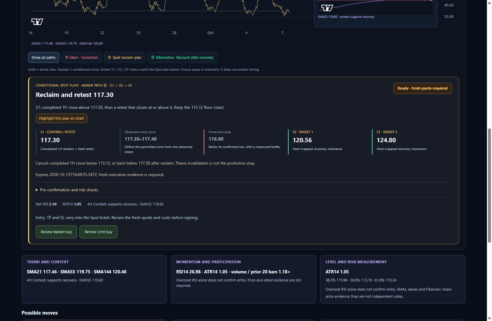
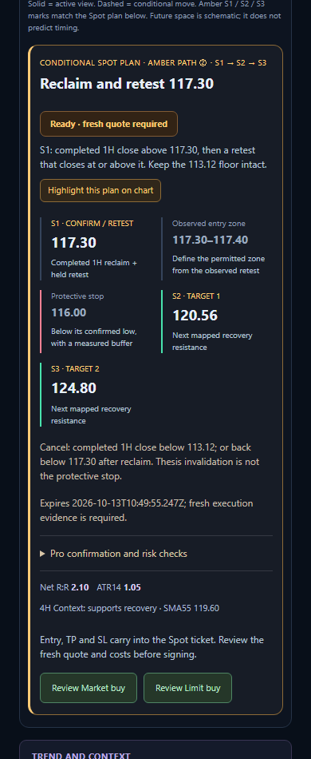
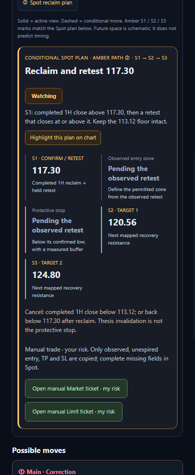
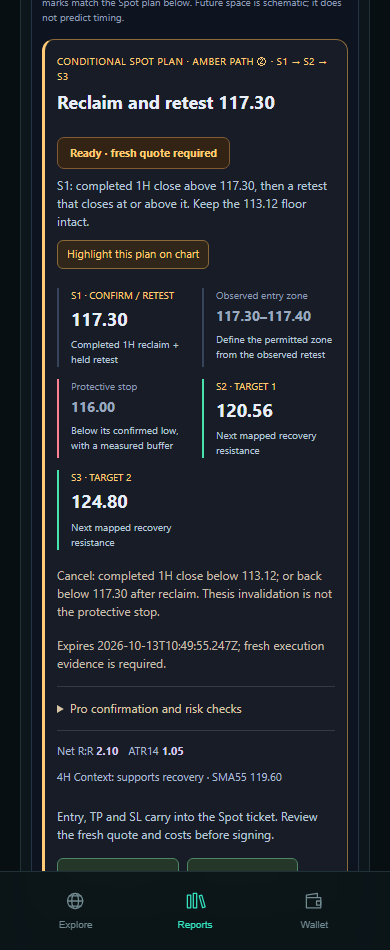
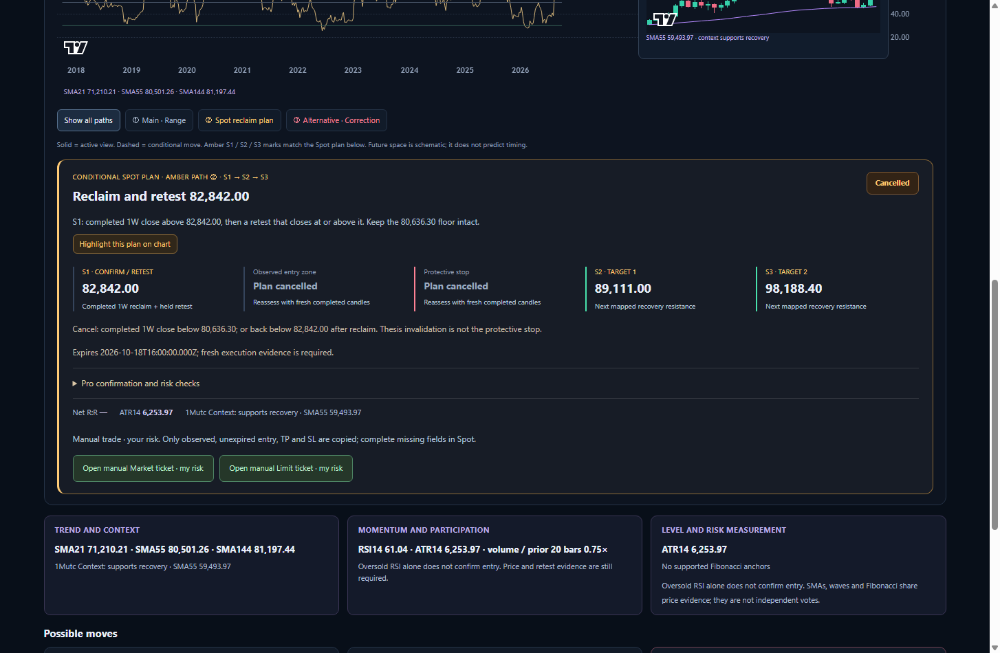

Global reports → Spot Market / Limit
13 October 2026. Actual report controls were clicked in an isolated Chromium browser. Ready examples below are synthetic interaction fixtures, with entry 117.40, TP 120.56 and SL 116.00. Watching and Cancelled examples demonstrate separate manual review; unobserved or stale protection is left blank. No trade, payment or Telegram message was sent.
Interaction and screenshot results · Compiled API health check: Pro medium · Saved live Quick / Pro reports · 20 refreshed timeframe views
Ready · desktop

Ready · phone

Watching · manual review

Legacy EVM Mini App component

Tested with mocked Telegram authentication, library and handoff endpoints. The current public TON Mini App remains research-only.
Cancelled weekly plan
